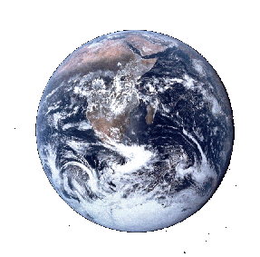

 In the really long term, the prognosis for life on Earth is bleak. Over the next few billion years, the Sun will get larger and brighter, eventually becoming a red giant with a size similar to Earth’s current orbit. A 1993 paper suggested that because the Sun will lose mass over time, the Earth will move away and escape being gobbled up by the sun. Unfortunately, a more recent paper (“Distant future of the Sun and Earth revisited”, 2008) determined that, due to tidal interaction and drag, the Earth won’t escape.
Bummer.
But never mind that; the real problem is that the Earth will eventually be too hot for liquid water to exist on its surface... which would be the end of life based on water. The 2008 paper estimated that this would happen within approximately one billion years. A more recent 2013 paper by Wolf and Toon analyzed the process in much more detail (summarized here). Wolf and Toon found that the Earth has more time, once Earth's complex weather processes are examined in much greater detail: "Earth's climate may remain safe against both water loss and thermal runaway limits for at least another 1.5 billion years and probably for much longer." However, the final outcome is not in doubt. Basically, we’re toast.
Many argue that mankind should occupy many other places, so that a disaster won’t destroy the species. For example, Stephen Hawking says that humanity must abandon Earth or face extinction. Now I agree that humans should go to other places too, but we’ve got a lot of history on Earth, and I think it’d be terrible to lose this big blue ball.
So instead, let’s plan on moving the Earth if we’re still around. We don’t have the technology today, but a billion years is a long time. In just 10,000 years we’ve gone from hunting & gathering to Android cell phones. A billion years is 100,000 units of 10,000 years — a very big number. I think it is reasonable to expect that our descendants will work out better technology than we have, given all that time, including far superior methods to create and control energy. The big problem with today’s spaceship Earth is that it lacks a steering wheel... so, let’s create one.
Now, it’s very possible that our descendants will be able to work out game-changing radical new technology. For example, maybe they could create a wormhole that simply repositions the Earth to any location that they wish. But if they simply have far better methods to create and control energy, what could they do?
It turns out the answer is, “quite a lot”. Now, you can’t put a lasso around the Earth, obviously; it’s spinning and you don’t want to stop that. And you don’t want to put a megarocket on the Earth to move it; that would heat Earth’s atmosphere in unpleasant ways. But you could put a big rock nearby and attract it gravitationally. Indeed, this is one of the ways that have been proposed for moving asteroids.
So, do we have any big rocks available? The answer is, sure. There are lots of asteroids we could use for the purpose strewn about the solar system. We also have a big rock close by, ready for use — we usually call it “the Moon”. Just attach some big honkin’ propulsion system to some rock (such as an asteroid or the Moon), move it into the right place (in the direction where you want the Earth to go), and you could slowly perturb the Earth’s orbit to something more favorable. This is something you want to do slowly, else tidal effects will be disastrous. You’d also have to be careful; you don’t want to significantly change the Earth’s rotation speed or the angle of its axis of rotation (though compared to getting broiled by the Sun, perhaps that’s a trade-off you could live with). Also, you’d better make sure the propulsion system is reliable; having the Moon or other big rock crash into the Earth could ruin your day. Although I focus on the Moon here, it appears that an asteroid would do; Can Life on Earth Escape the Swelling Sun? notes that “One team at Santa Cruz University in California has proposed capturing a passing asteroid and using its gravitational effects to "nudge" Earth's orbit outward. A continuous asteroid passage every 6,000 years or so could keep Earth at a comfortable distance and give life another 5 billion years on the planet.”
A propulsion system that directly pushed the Moon or other large object away from the Earth might throw matter or energy directly toward the Earth, if done naively, and that might be unpleasant. One partial solution might be to use several outputs, each of which were angled away but when combined pointed in the right direction. That would help with steering, too, by varying the amount of thrust from each.
One alternative to using gravity would be electromagnetism — create a big electromagnet, and turn it on when you want to pull (or push). Turning it on would take more energy, but it would mean that you get to decide when it’s on. It would be complicated if the Earth’s magnetic pole was not near its axis of rotation, though, and you would probably need to pull it roughly in its direction of rotation. Otherwise you might completely change the Earth’s spin, with annoying consequences for anyone on it. You also need to make sure which direction is magnetic north, and which is magnetic south, since that occasionally switches.
So now that we’re moving the Earth, where should we put it? The short answer is that the best place varies over time. As the Sun changes, you want to move it to some zone that is habitable. Here are some possibilities in the first few billion years to come:
The Sun will continue to change, so moving the Earth to keep it habitable will not be a one-time event; the 2008 paper has the details of what the Sun will do. In about 5.2 billion years from now, the Sun will be at the end of its “main sequence”, at which point the Earth will need to be between 1.29 to 1.86 AU distant from the Sun (a range that includes Mars’ current orbit). Then the Sun’s core will run out of hydrogen; hydrogen will begin to burned in a shell instead, and the Sun will begin climbing up the red giant branch (RGB) curve, becoming much bigger and brighter than today. By about 7.6 billion years from now, the zone where liquid water can exist on a planet’s surface will have shifted to 49.4-71.4 AU. That means that by that time we need to move Earth beyond Pluto’s current orbit (Pluto’s maximum distance from the Sun is 49.3 AU).
As the Sun continues to age it will experience tremors and other nastiness. Rather than moving the Earth closer for heat and light (and experiencing those ill effects), we’d probably need to keep it far away from the Sun and give it an alternative heat and light source. This alternative source could either on the moon or elsewhere; perhaps Jupiter could be moved and lit as a small star for our benefit. Eventually, though, the Sun will become a slowly-cooling white dwarf. At that point, what should we do for energy?
At some point, and almost certainly once the Sun becomes ineffective at providing heat and light, we might want to move the Earth to another star. That would require providing Earth a heat and light source for a very long time until we got it to its new destination (otherwise the Earth would end up in a deep freeze along the way, which seems unfortunate). In about 4 billion years from now the Andromeda galaxy will begin colliding with our Milky Way galaxy (the merging will then take about 2 billion years); that may give us a new closer star to shoot for. Spaceship Earth would then become Starship Earth.
So, authors need to stop saying stuff like “the Earth will be destroyed in X billion years”. That might happen, but only if no one intervenes. Rescuing home planets isn't even a new idea; E.E. “Doc” Smith's 1948 science fiction classic Triplanetary notes, in its third paragraph, that “the Arisians... had to work against time in solving the engineering problems associated with moving a planet from an older to a younger sun”.
We absolutely do not have the technology to do this today; we have nothing even close. But people 10,000 years ago didn’t have computers, either.
But it turns out that there are things we can do today that relate to this idea:
Indeed, even in the short term, techologies to develop low-cost and high-yield energy without depending on oil would eliminate a vast number of problems that we (the current crop of humans) have to deal with today. And who knows, some of this might help us move to better real estate in the future.
Feel free to see my home page at https://dwheeler.com. You may also want to look at my paper Why OSS/FS? Look at the Numbers! and my book on how to develop secure programs.
Some related materials include the animation "The Future of Our Sun" by Helmut Schlattl (Max Planck Institute of Astrophysics), The Universe: End of Earth, and Earthmoving by Sam Hughes.
(C) Copyright 2010-2016 David A. Wheeler.